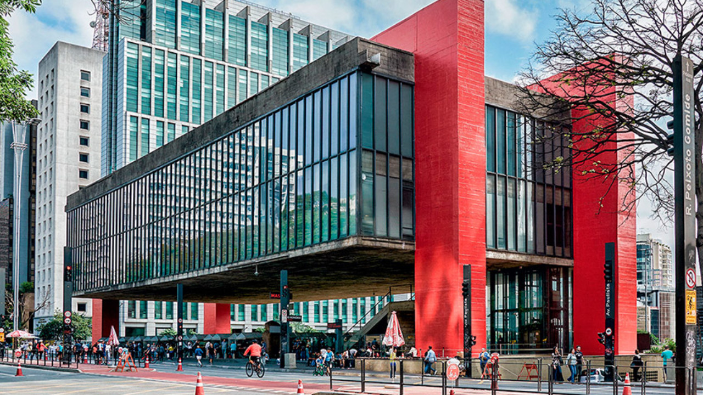

São Paulo
A maior metrópole do Brasil
História
Fundada em 25 de janeiro de 1554 pelos padres jesuítas Manuel da Nóbrega e José de Anchieta, São Paulo nasceu como um pequeno colégio voltado para catequizar indígenas, no alto de uma colina onde hoje está o Pátio do Colégio. Durante séculos, foi uma vila modesta, mas ganhou importância com as expedições bandeirantes, que partiam do território paulista em busca de riquezas e expansão do território.
A grande virada aconteceu no século XIX, com o ciclo do café. A riqueza gerada pelo grão trouxe imigrantes europeus e japoneses, que ajudaram a transformar a cidade em um polo econômico e cultural. Já no século XX, São Paulo se consolidou como motor econômico do Brasil, recebendo ondas migratórias internas (principalmente nordestinos) e internacionais.
Pontos turísticos
São Paulo é conhecida pela diversidade de opções culturais e urbanas. Alguns destaques:
• Avenida Paulista – ícone da cidade, mistura prédios modernos, centros culturais, livrarias e é palco de manifestações e eventos.
• Parque do Ibirapuera – considerado o pulmão verde da capital, com museus, lagos e áreas para esportes.
• Mercado Municipal – famoso pelo sanduíche de mortadela e o pastel de bacalhau.
• Museu do Futebol (no Estádio do Pacaembu) – um passeio interativo para apaixonados por esporte.
• Liberdade – bairro da cultura japonesa, com feirinhas típicas e lanternas orientais.
• Pinacoteca do Estado – museu de arte renomado, próximo à Estação da Luz.
• Catedral da Sé – marco zero da cidade, localizada na Praça da Sé.
Curiosidades
• São Paulo é a cidade com mais helicópteros do mundo, devido ao trânsito intenso.
• Mais de 12 milhões de pessoas vivem na capital, e cerca de 22 milhões na região metropolitana.
• É considerada a capital gastronômica do Brasil, com restaurantes de mais de 50 nacionalidades diferentes.
• Tem a maior comunidade japonesa fora do Japão.
• A cidade nunca dorme: muitos bares, padarias e restaurantes funcionam 24 horas por dia.
Cultura e Gastronomia
São Paulo é um caldeirão cultural. É comum encontrar um restaurante italiano ao lado de um árabe, coreano ou nordestino. A cidade também é referência em teatro, música e artes plásticas, recebendo grandes eventos como a Bienal de Arte, a Virada Cultural e shows internacionais no Allianz Parque e no Morumbi.
Na gastronomia, além da pizza paulistana (famosa por ser considerada uma das melhores do mundo), os destaques são o sanduíche de mortadela do Mercadão, a feijoada de quarta-feira e sexta-feira e a culinária multicultural espalhada pela cidade.
Voltar